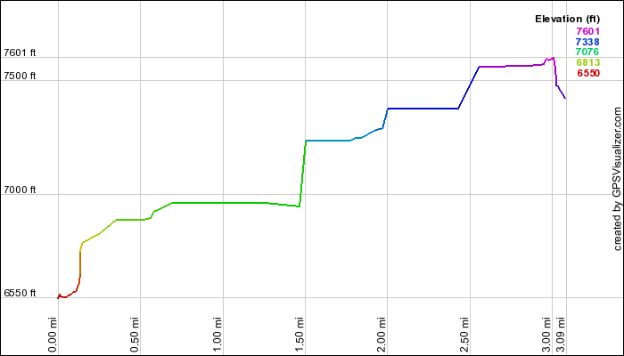

Elk
Mountain Drive
While it was a
short drive that we did to wait out some stormy clouds, we were treated
to some wonderful views of the Sawtooth Mountains, Stanley Lake, and
Elk Meadow from this little drive.
|
06/13/2007 Elk Mountain |
 The Northern End of the Sawtooths as viewed from Elk Mountain. A tiny spot of Lake Stanley can be seen between the trees in the lower left corner of the picture. |
GPS Info
We collected all of the following data from our GPS unit during the adventure:Maps
This Google Map is provided by GPS Visualizer
Elevation Profile
This profile is provided by GPS Visualizer
Coordinates and other details
|
3.1 Miles 32:38 6 Miles/Hr. N 44º 14.752, W 115º 03.964 N 44º 15.297, W 115º 04.122 |
If you would like to use this info with your GPS unit, the full GPX file is here.
If you want to view this in Google Earth, you can download the KMZ files of the track and topographic overlay.